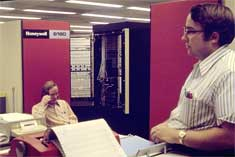

Loading
Location
 Massachusetts Institute of Technology,
Cambridge, MA, USA.
Massachusetts Institute of Technology,
Cambridge, MA, USA.
The MIT GE-645 was installed in the 9th floor machine room of Project MAC, at 545 Technology Square.

Dave Jordan & Roger Roach
at the 6180 console,
MIT building 39, third floor, mid-1970s.
(Click for a larger view.)
In 1972, a Honeywell 6180 was installed in MIT's building 39, at the Information Processing Services Center. There are publicity pictures of the new machine.
The MIT system was upgraded several times and finished as a dual DPS8/70M.
The machine was moved to building W91, 565 Memorial Drive, the old wind tunnel building, in the summer of 1983, and Building 39 became the Microcircuits production building. The third floor still has the original raised floor.
First Installed
GE-645: January, 1967
H-6180: November, 1972
Configuration
GE-645: (1967-1973)
- 2 CPUs (435 KIPS each)
- 2 GIOCs, 512K words core memory
- 4 MW firehose drum
- 2 DSU-204 disks
- RACE magnetic strip memory (never used)
- card reader & punch
- printer
ARPANet connection (GIMPSPIF) [host 6] (added in 1970).
A detailed configuration memo from
the Multics Planning Notebook is available.

H-6180: (1972-1988)
- 2 CPUs (1 MIPS each)
- 2 IOMs
- 2 DN355 front-end processors
- 384K 36-bit words MOS memory (increased over time)
- 1 MW paging device (bulk store)
- 15 MSU451 disks (150 MB each)
- 8 tape drives,
- card reader & punch
- printer
- ARPANet connection (ABSI) [host 44]
(List price of such a system was about $7 million.)
Some additional equipment owned by Honeywell (an IOM, an DN355, and an extra printer) was used at the MIT site until CISL set up its own development machine in 1974.
A third CPU was made available by Honeywell in early 1975 so that the MIT Multics system could run two CPUs while the processors were converted to add cache memory.
256K of memory was added in March, 1978.
In mid 1980, the configuration was updated to:
2 L68/DPS processors
2.5 MW of memory
replacing the 512K of core memory and 2 MW bulk store.
There were also 2 dual channel disk controllers, and 2 6678 FNPs,
indicating that we could create two systems from them.
Thus assuming, although not specified, 2 IOMs.
In 1982, the machine was upgraded from 2 DPS/68 processors with 3,072K (words) of memory to 2 DPS 8/70M processors with 2 MB of memory and an additional 14 MB of memory.
When MIT sold its Multics hardware back to Honeywell in 1988, the system had a total of 24 MB of memory.
MIT Multics Computing Timeline
| TYPE | YEAR | LSTYLE | HEIGHT | TEXT | TSTYLE |
|---|---|---|---|---|---|
| back | 1944 | #eeeeee | 1957 | Whirlwind | |
| back | 1957 | #ddddff | 1963 | batch | |
| back | 1963 | #ddffdd | 1969 | CTSS | |
| back | 1969 | #ffdddd | 1988 | Multics | |
| back | 1988 | #ddffdd | 2020 | Athena | |
| axis | 1940 | ||||
| axis | 1955 | ||||
| axis | 1965 | ||||
| axis | 1975 | ||||
| axis | 1985 | ||||
| axis | 1995 | ||||
| axis | 2005 | ||||
| axis | 2015 | ||||
| axis | 2030 | ||||
| data | 1944 | 1 | Whirlwind | ||
| data | 1957 | 1 | CC 704 | ||
| data | 1959 | 2 | time|sharing | ||
| data | 1961 | 4 | CTSS|demo | ||
| data | 1963 | 5 | CTSS | ||
| data | 1964 | 1 | GE|BTL | ||
| data | 1965 | 3 | 635 | ||
| data | 1967 | 4 | 645 | ||
| data | 1969 | 1 | 645|Multics | ||
| data | 1972 | 3 | 6180|Multics | ||
| data | 1973 | 5 | CTSS|shutdown | ||
| data | 1982 | 1 | 2-DPS|8/70M | ||
| data | 1988 | 3 | Multics|shutdown | ||
| data | 2007 | 1 | Multics|Open Source |
Application areas
MIT's machine provided general time-sharing services for education and research to the MIT community, and also supported a cooperative project with GE (later Honeywell) Cambridge Information Systems Laboratory (CISL) to develop the Multics operating system. This second activity meant that the MIT machine was the primary development and exposure site for the Multics design team: system programmers edited and compiled their files on the MIT machine, the master source archive for the system was stored at MIT, and new system versions were first used in production at MIT.
 Report of the President 1969, Massachusetts Institute of Technology
and
Report of the President 1969, Massachusetts Institute of Technology
and
 Report of the President for the Academic Year 1969-1970, Massachusetts Institute of Technology
describes usage of Multics at MIT in the 1968-1970 time frame.
Report of the President for the Academic Year 1969-1970, Massachusetts Institute of Technology
describes usage of Multics at MIT in the 1968-1970 time frame.
Wes Burner, MIT building 39, 1972.
(Click for a larger view.)
Salesman
The first salesman for GE was Weston J. Burner. He went on to work at MIT, as Director of the Information Processing Center. Other marketing folks involved with the MIT site over the years included Bob Chevalier and Bob Hoffman.
Some photographs from a 1980s contract signing event in MIT President Paul Gray's office have been provided by Bob Chevalier.
Site Analysts
In a sense, the whole MIT/CISL team were the site analysts. But there was a special team devoted to making and keeping the system stable, during several periods of the system's development. Dave Vinograd led the "System Stabilization Group" during the period when developers were first trying to use the system to support itself. Later, Jerry Grochow led a team at MIT that concentrated on providing a stable initial Multics service. Tom Van Vleck, Dave Jordan, and Roger Roach later performed the same function.
System Administrators
System administration was also different at MIT from most sites, because of the development nature of the site. Much of the system administration code was invented at MIT and shows attention to MIT's concerns. For example, the customer billing subsystem written by Tom Van Vleck is directly responsive to needs of the MIT IPC.
Bob Hart and Bobby Burke were the MIT User Services people who registered users and did the daily system administration.
Operations
The people who ran the MIT 645 and 6180 included Michael V. Solomita, Bob Degan, Dick Cerrato, Leo Ryan, Gerald Andrews, Joe McGillivray, Dick McNamara, Peter Monaco, Dick Moore, Gordy Noseworthy, Eddie Reardon, and John Waclawski.
Notable developments
The MIT Student Information Processing Board (SIPB) was an organization dedicated to providing computer access to undergraduates.
This group produced software that used the Multics Limited Service System facilities to give low-cost computing to many students.
SIPB_Admin.SIPBADMIN was the  first paying user logged in to the MIT 6180 Multics when the machine first came up at MIT in July 1973,
and the last paying user logged in when the system shut down in January 1988.
first paying user logged in to the MIT 6180 Multics when the machine first came up at MIT in July 1973,
and the last paying user logged in when the system shut down in January 1988.
Project MAC users Al Strnad and L. Alan Kraning pioneered the implementation of relational data bases in the late 60s, and a prototype relational database system, Admins, was constructed by Jay Goldman and Prof. James D. Bruce and used to manage the MIT Electrical Engineering Department in the early 70s.
Final Shutdown
The MIT 6180 CPUs were sent to the McDonnell Douglas Aviation site.
2MB of memory was sold to the Puerto Rican Highway Authority site.
IPSC Bulletin Articles
The MIT Information Processing Center published informative memos about using Multics. Barbara Hughes produced a memo in 1981 that reprinted some useful memos, from MIT and USL. (I found it online at the web site of The Retro-Computing Society of Rhode Island.) See Multics Bulletin Article Reprints, MIT IPSC, MS-99 rev 1
Anecdotes
Installing the Drum
When MIT was ready to install the 645 on the ninth floor of Tech Square, it was discovered that the firehose drum was too heavy for the floor. A huge girder had to be brought in by crane to distribute the weight.
Graffiti
Tom Van Vleck In the early 60s at MIT, users keypunched and submitted batch processing jobs and picked up their output in the basement of MIT Building 26. When their programs failed, users sometimes scribbled their frustration on the walls.
When MIT opened up Building 39 as its new Information Processing Center building in the late 60s, some of the staff were worried that disgruntled batch computing users would trash the nice new walls with graffiti. I suggested that the staff put up a big sheet of paper on a bulletin board outside the counter where users dropped off jobs and picked up output: people could write whatever they wanted there, and staff would post a restatement of the legible comments with a response. This worked well: taking users' issues seriously and responding moderately seemed to improve communication, and reasonable suggestions were implemented.
For time-sharing systems, users didn't come to the Computation Center building as often, so a virtual analogue was invented for Multics, an info segment called mmtu.info (for the biblical Book of Daniel mene, mene, tekel, upharsin: "the writing on the wall"). Users sent mail to an account called something like mmtu, and the anonymized user message and its answer would be added to an on-line help file.
Online Consulting
Tom Van Vleck Batch users at MIT could go to the Programming Assistance and Information office on the second floor of Building 39. All IPC staff took a turn in this office, helping harried students figure out what went wrong with their OS/360 jobs. (Even staff whose primary responsibility was CTSS, Multics, or CP/67 took a turn. You didn't need to know every detail of OS/360 to help out: you just had to know how to look up answers in the big rack of manuals in the office, and how to recommend that the user run the job again and get a memory dump.)
This didn't work so well for remote time-sharing users. For Multics, Richard Tilden and I created an MIT Installation Maintained Library program called online_consultant (olc) in 1971. Users could type queries to olc and the program would see if a consultant was signed on, and if so send them an interactive message, similar to the send_message command. Consultants signed on with online_consultant_on (olcn) and signed off with online_consultant_off (olcf). This facility excused the Multics programmers from sitting in the PAI office, and allowed staff members with home terminals to sign on from home on evenings and weekends, when many online users needed help.
I was quite surprised to discover in 1999 that long after MIT's Multics machine was gone, the MIT Athena network operated a descendant facility, also called online_consultant. There is a published paper on Athena's olc: "OLC: an on-line consulting system" by T. J. Coppeto, B. L. Anderson, D. E. Geer, and G. W. Treese, published in the conference proceedings of the 1989 ACM Special Interest Group on User Services. https://dl.acm.org/doi/abs/10.1145/73760.73814
Campus Unrest
In the late 60s, campus opposition to the Vietnam War was accompanied by criticism of the ARPA funding for Project MAC and the Cambridge Project. Various demonstrations and sit-ins occurred. The elevators in Tech Square and building 39 were changed to require a key to get to the machine room floor, but no demonstrators ever attacked the computers. In 1971, Honeywell CISL was invaded by a small group of protesters opposed to the manufacture of antipersonnel weapons by another division of the company; they threw flour around the offices.
The big snow of 1978
A blizzard the first week of February 1978 paralyzed Boston for a week. Driving was forbidden; roads were blocked with abandoned cars anyway. The MIT machine stayed up during this time, because it had been set up on "unattended operation," with a BOS script that would reboot the system if it crashed, automatically performing recovery operations if necessary. See MTB-152 Unattended Operation of Multics (1975-01-13) and MTB-313 Unattended Operation of Multics - Part II (1976-12-03). (The automated reboot of Multics was further enhanced when BOS was replaced by the Bootload Command Environment in MR11: see Multics Bootstrap Loading.)
The third CPU
[Jeff Schiller] I do believe the third [6180] processor was a freebie. I don't remember why. But I do remember finding bugs that could not be found at CISL because they required 3 CPUs. And then there was the problem in locking that could only show up if you had a CPU 'A' (because 'A' == 0 and the new locking code assumed 0 == free!).
The Xerox 9700 Printer
Apparently MIT had a Xerox 9700 printer connected to Multics. Olin sibert mentions this in Multics B2 Security Evaluation, and J. Spencer Love worked on "x9700" at MIT.
Updated 07/27/95
Updated 07/29/02 with config information from Roger Roach and Jeff Schiller.
Updated 11/01/25 with Multics Bulleting Reprints.